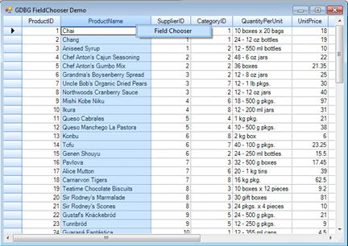
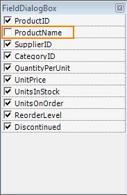
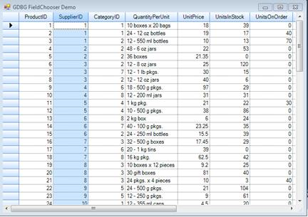

This feature enables you to customize the view of the grid without modifying the database. The FieldChooser class of a GridDataBoundGrid has been implemented to add or remove columns from a grid.
Use Case Scenarios
This feature will be useful when you want to remove certain columns (which cannot be deleted) from the grid.
Methods
Table 6: Methods Table
|
Method |
Description |
Parameters |
Type |
Return Type |
Reference links |
|
WrieGrid |
Used to wire the FieldChooser. |
Overloads: ( Arg1)
|
In GridWindowsForm |
Example: GridDataboundGrid1.WireGrid(GridDataboundGrid). |
NA |
|
UnWrieGrid |
Used to unwire the FieldChooser. |
NA |
In GridWindowsForm |
Example: GridDataboundGrid1.Unwired(). |
NA |
Sample Link
You can find a sample for this feature in the following location:
..\..\AppData\Local\Syncfusion\EssentialStudio\9.4.0.49\Windows\Grid.Windows\Samples\2.0\Data Bound\GDBG FieldChooser Demo
Adding Field Chooser for Grid Data Bound Grid
1. To add field chooser, pass data bound grid as the parameter of the WireGrid method.
The following code illustrates this:
|
[C#]
GridDataBoundFieldChooser fChooser = new GridDataBoundFieldChooser(); fChooser.WireGrid(this.GridDataBoundGrid1); |
|
[VB]
Dim fchooser As GridDataBoundFieldChooser = New GridDataBoundFieldChooser() fchooser.WireGrid(Me.GridDataBoundGrid1)
|
2. When the code runs, the entire grid will open.
3. Right click on a column header and select the Field Chooser menu item to view the Field Chooser dialog.

Figure 228: Field Chooser
4. This dialog will list all the column names with check boxes adjacent to them.

Figure 229: FieldDialogBox
5. Select the checkboxes of the columns you want to be displayed in the grid.
6. The grid will have only the columns which are selected in the Field Chooser dialog.

Figure 230: Customized Grid